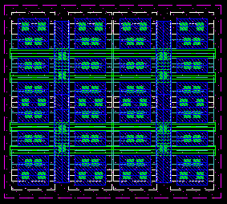
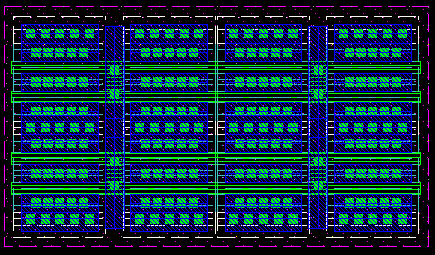
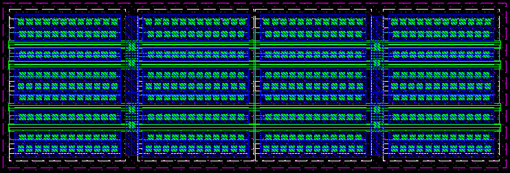
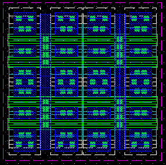
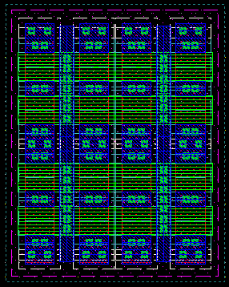

| finger width = 2u, length = 0.6u  |
finger width = 4u, length = 0.6u  |
finger width = 8u, length = 0.6u 
|
|---|---|---|
| finger width = 2u, length = 1u  |
finger width = 2u, length = 2u  |
|